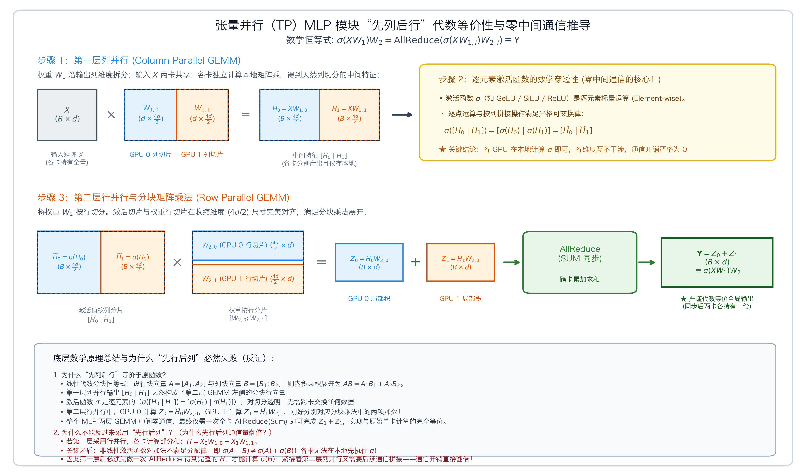

sequenceDiagram
autonumber
participant Input as 输入张量 X
participant Column as Column Linear (QKV Projection)
participant Core as Multi-Head Attention Compute
participant Row as Row Linear (Out Projection)
participant Comm as 通信原语 (AllReduce)
Input->>Column: 无通信广播输入 X
Column->>Core: 各卡计算本地注意力头 (Heads / TP)
Core->>Row: 局部注意力上下文乘本地行分片
Row->>Comm: 触发一次 AllReduce 同步各卡部分和
Comm-->>Input: 输出完整特征向量进入下层
第 6 课：张量并行 TP
参考答案版：包含完整代码实现与问答题深度参考解析。建议先独立完成练习题后再展开核对。
Important统一完成标准与及格线
代码 4 分、Q1～Q3 各 2 分，通过线 8/10。必须解释正确性边界、显存/通信公式中的单位与分片维度；未实际运行的内容只能标记为静态审查。
- 对应官方章节：Tensor Parallelism / Tensor parallelism in a transformer block
- 前置：第 3 课（all-gather / all-reduce / broadcast / scatter）、第 5 课（为什么 ZeRO 之后还需要 TP）
- 状态：未开始
本课目标
完成后你需要能够：
- 从矩阵乘法恒等式推导列并行与行并行的切分方式与所需 collective。
- 解释 Transformer 中 MLP 与 Attention 的 TP 布局（col → row，省一次中间 all-reduce）。
- 说明 TP 的约束：TP ≤ 注意力头数、GQA 下 K/V 同步问题、TP 通常在节点内（≤8）。
- 说明 TP 通信为什么在关键路径上、难与计算重叠。
核心概念
核心操作与执行流程图解

图 6-1：Megatron-LM MLP 模块“先列后行”分块矩阵乘法代数等价性证明与零中间通信机制
图 6-2：张量并行 Attention 模块一次前向传播数据流与通信点
1. 矩阵乘法分块恒等式与张量并行的代数基础
张量并行（Tensor Parallelism, TP）是由 Megatron-LM 提出的经典模型并行范式。不同于数据并行（DP/ZeRO）在样本 batch 维度切分，TP 的核心思路是将神经网络层内部的单个矩阵乘法（GEMM）物理拆分到多个不同的 GPU 上协同计算。
在 PyTorch 线性层 \(Y = X W^T\)（或标准数学记号 \(Y = X W\)）中，设输入特征矩阵 \(X \in \mathbb{R}^{B \times S \times H_{\text{in}}}\)，权重矩阵 \(W \in \mathbb{R}^{H_{\text{in}} \times H_{\text{out}}}\)，利用矩阵分块乘法的基本恒等式，可以得到两种对称的并行切分方式：
方案 A：列并行线性层（Column Parallel Linear）
将权重矩阵 \(W\) 沿着输出特征维度（列维度）切分为 \(k\) 块：\(W = [W_1, W_2, \dots, W_k]\)，其中每张卡分得切片 \(W_i \in \mathbb{R}^{H_{\text{in}} \times \frac{H_{\text{out}}}{k}}\)。
输入张量 \(X\) 在各卡间完整保留一份副本（无须切分）。各 GPU 本地独立执行矩阵乘：
\[Y_i = X \cdot W_i \quad (i = 1, \dots, k)\]
全局输出为各卡局部结果在列维度的拼接：
\[Y = [Y_1, Y_2, \dots, Y_k] = [X W_1, X W_2, \dots, X W_k] = X [W_1, W_2, \dots, W_k] = X W\]
- 通信语义：若后续算子需要完整输出，需要发起一次 All-Gather 算子将 \([Y_1, \dots, Y_k]\) 跨卡拼接。
方案 B：行并行线性层（Row Parallel Linear）
将权重矩阵 \(W\) 沿着输入特征维度（行维度）切分为 \(k\) 块：\(W = \begin{bmatrix} W_1 \\ W_2 \\ \vdots \\ W_k \end{bmatrix}\)，其中每张卡分得切片 \(W_i \in \mathbb{R}^{\frac{H_{\text{in}}}{k} \times H_{\text{out}}}\)。
此时输入张量 \(X\) 必须同步沿着最后一维切片为 \(X = [X_1, X_2, \dots, X_k]\)（通过 Scatter 分发到各卡）。各 GPU 本地计算部分和：
\[Z_i = X_i \cdot W_i \quad (i = 1, \dots, k)\]
全局输出为各卡局部矩阵乘结果的直接数值相加：
\[Y = \sum_{i=1}^k Z_i = \sum_{i=1}^k X_i W_i = [X_1, X_2, \dots, X_k] \begin{bmatrix} W_1 \\ W_2 \\ \vdots \\ W_k \end{bmatrix} = X W\]
- 通信语义：各卡计算出的 \(Z_i\) 形状与全局输出完全一致，必须发起一次 AllReduce (Sum) 算子，各卡才能得到完整准确的特征向量 \(Y\)。
2. Transformer 里的配对级联：消除中间通信的精妙设计
如果简单地对每个线性层孤立使用列并行或行并行，每次计算都会分别引入一次 All-Gather 或 AllReduce，带来昂贵的通信开销。Megatron-LM 最天才的架构设计在于：将网络模块设计为“列并行 \(\to\) 行并行”的成对级联，使得中间层计算实现零通信跨越！
A. MLP 模块的列行级联与数学等价性证明（如图 6-1 所示）
在经典 Transformer MLP 模块中，单卡未切分的标准前向计算流程为： \[Y = \sigma(X W_1) \cdot W_2\] 其中输入矩阵 \(X \in \mathbb{R}^{B \times d}\)，升维权重 \(W_1 \in \mathbb{R}^{d \times 4d}\)，逐元素激活函数 \(\sigma\)（如 GeLU、SiLU），降维权重 \(W_2 \in \mathbb{R}^{4d \times d}\)，输出特征 \(Y \in \mathbb{R}^{B \times d}\)。
很多初学者容易困惑：为什么各卡各自计算一部分局部矩阵乘，中间完全不通信，最后仅在模块出口做一次 AllReduce 求和，结果就能与单卡全量计算分毫不差地严格等价？
其底层的严密代数推导依托于以下四个数学步骤：
1. 代数基石：分块矩阵乘法恒等式（Block GEMM Identity）
设行分块矩阵 \(A = [A_1, A_2, \dots, A_k]\) 与列分块矩阵 \(B = \begin{bmatrix} B_1 \\ B_2 \\ \vdots \\ B_k \end{bmatrix}\)，其中子块 \(A_i\) 的列数与 \(B_i\) 的行数在内部收缩维度严格相等。由线性代数分块内积展开定理，两者的全局矩阵乘积恒等于各子块对应积的累加和：
\[A B = [A_1, A_2, \dots, A_k] \begin{bmatrix} B_1 \\ B_2 \\ \vdots \\ B_k \end{bmatrix} = \sum_{i=1}^k A_i B_i = A_1 B_1 + A_2 B_2 + \dots + A_k B_k\]
2. 步骤一：第一层列并行（Column Parallel GEMM）
将升维权重矩阵 \(W_1\) 沿输出隐藏层维度（列维度）均分为 \(k\) 块（\(k = \text{TP}\)）： \[W_1 = [W_{1, 1}, W_{1, 2}, \dots, W_{1, k}], \quad W_{1, i} \in \mathbb{R}^{d \times \frac{4d}{k}}\]
输入张量 \(X\) 完整广播至各卡（两卡均常驻完整副本）。
各 GPU 独立执行本地矩阵乘法： \[H = X W_1 = X [W_{1, 1}, W_{1, 2}, \dots, W_{1, k}] = [X W_{1, 1}, X W_{1, 2}, \dots, X W_{1, k}] = [H_1, H_2, \dots, H_k]\]
每张卡计算出的本地特征为 \(H_i = X W_{1, i} \in \mathbb{R}^{B \times \frac{4d}{k}}\)。此时中间隐藏状态 \(H\) 天然以列分块形式分布在各卡本地显存中。
3. 步骤二：逐元素非线性激活的穿透性（零通信的数学核心！）
激活函数 \(\sigma\)（如 GeLU、SiLU、ReLU）是逐元素映射（Element-wise），每一个输出标量仅取决于当前位置的输入标量，不发生任何通道间（跨列）的信息混叠与交叉求和。
因此，逐元素函数对按列分块拼接操作具有完全的穿透与可交换性： \[\sigma(H) = \sigma([H_1, H_2, \dots, H_k]) = [\sigma(H_1), \sigma(H_2), \dots, \sigma(H_k)] = [\widetilde{H}_1, \widetilde{H}_2, \dots, \widetilde{H}_k]\]
关键结论：每张 GPU 仅需在本地对自己的 \(H_i\) 执行 \(\widetilde{H}_i = \sigma(H_i)\)，中间完全不需要跨卡交换任何数据，通信开销严格为 0！
4. 步骤三：第二层行并行（Row Parallel GEMM）与分块内积匹配
将第二层降维权重 \(W_2\) 沿输入行维度均匀切分： \[W_2 = \begin{bmatrix} W_{2, 1} \\ W_{2, 2} \\ \vdots \\ W_{2, k} \end{bmatrix}, \quad W_{2, i} \in \mathbb{R}^{\frac{4d}{k} \times d}\]
此时，左侧激活矩阵 \(\widetilde{H} = [\widetilde{H}_1, \dots, \widetilde{H}_k]\) 的列切片维度（\(\frac{4d}{k}\)）与右侧权重矩阵 \(W_2\) 的行切片维度（\(\frac{4d}{k}\)）严格完全对齐！
直接代入前面的分块矩阵乘法恒等式： \[\widetilde{H} W_2 = [\widetilde{H}_1, \widetilde{H}_2, \dots, \widetilde{H}_k] \begin{bmatrix} W_{2, 1} \\ W_{2, 2} \\ \vdots \\ W_{2, k} \end{bmatrix} = \sum_{i=1}^k \widetilde{H}_i W_{2, i}\]
观察求和式中的每一项 \(\widetilde{H}_i W_{2, i}\)：GPU \(i\) 本地持有 \(\widetilde{H}_i\)（来自步骤二本地激活）与 \(W_{2, i}\)（本地参数切片），因此各卡可以在本地独立完成局部矩阵乘法： \[Z_i = \widetilde{H}_i W_{2, i} = \sigma(X W_{1, i}) \cdot W_{2, i} \in \mathbb{R}^{B \times d}\]
这一步局部 GEMM 同样完全在各卡本地完成，全程零通信！
5. 步骤四：末尾 AllReduce (Sum) 闭环实现严格等价
观察全局真实输出： \[Y = \sum_{i=1}^k Z_i = Z_1 + Z_2 + \dots + Z_k\]
各卡本地算出的 \(Z_i\) 形状完全一致，均为完整输出尺寸 \((B \times d)\)。
系统只需在 MLP 模块的出口调用一次
AllReduce(op=Sum)通信原语： \[\text{AllReduce}(\{Z_i\}_{i=1}^k) = \sum_{i=1}^k Z_i = \sum_{i=1}^k \sigma(X W_{1, i}) W_{2, i} \equiv \sigma(X W_1) \cdot W_2 = Y\]一次 AllReduce 即可将所有分块项累加，使每张 GPU 同时获得与单卡计算完全一致的数学真实解 \(Y\)！
6. 为什么颠倒为“先行后列”无法消除中间通信？（反证对比）
若将级联顺序颠倒为“第一层行并行 \(\to\) 第二层列并行”：
第一层行切分：输入 \(X = [X_1, X_2]\)，权重 \(W_1 = \begin{bmatrix} W_{1, 1} \\ W_{1, 2} \end{bmatrix}\)。各卡计算局部积 \(X_i W_{1, i}\)。
此时中间隐藏状态为各卡局部积的加和：\(H = X_1 W_{1, 1} + X_2 W_{1, 2}\)。
致命障碍在于非线性激活函数对加法不满足分配律： \[\sigma(A + B) \neq \sigma(A) + \sigma(B) \quad (\text{例如 } \text{GeLU}(x_1 + x_2) \neq \text{GeLU}(x_1) + \text{GeLU}(x_2))\]
因此各卡绝不能在本地各自计算 \(\sigma(X_i W_{1, i})\)！必须在第一层之后强行插入一次 AllReduce 将 \(H\) 累加出来，才能计算激活值 \(\sigma(H)\)。
第二层紧接列并行时，后续又需要通信拼接，导致整个模块必须执行 2 次集体通信。
结论：Megatron-LM 之所以能将通信压缩为仅 1 次 AllReduce，核心正在于“先列切分使得非线性激活在本地解耦”与“后行切分使得矩阵分块内积展开刚好匹配加法规约”的精妙数学对偶。
B. 多头自注意力模块（MHA）的列行级联（如图 6-2 所示）
自注意力模块遵循完全相同的对称哲学：
- QKV 投影采用列并行：
- 将 \(W_Q, W_K, W_V\) 沿输出头维度（Heads）均分。
- 设总头数为 \(H\)，每个 TP Rank 独立负责 \(\frac{H}{\text{TP}}\) 个注意力头。
- 注意力核心计算（Score & Softmax & Context）：
- 由于不同注意力头之间的计算彼此完全独立，每个 GPU 可以在本地并行完成其管辖头的所有 Scaled Dot-Product Attention 计算，全程零通信。
- 输出投影层（Out Projection \(W_O\)）采用行并行：
- \(W_O\) 权重沿输入头维度行切分，本地 Context 与本地 \(W_{O, i}\) 相乘。
- 最后仅在注意力块末尾发起一次 AllReduce (Sum)。
总结：在整个 Transformer Block 的前向计算中，仅包含 2 次 AllReduce（Attention 一次 + MLP 一次）。反向传播时亦包含对应的 2 次 AllReduce（梯度传播伴随算子的对偶反转）。
3. 张量并行（TP）与 ZeRO 的根本差异与关键路径瓶颈
理解 TP 的优势与物理代价是构建超大规模训练系统的分水岭：
- TP 与 ZeRO 的显存切分维度本质不同：
- ZeRO/FSDP 仅在样本（DP）维度消除静态权重冗余，对单步计算图内的中间激活张量（Activations）无能为力。
- TP 沿模型隐藏层内部切分：不仅参数、梯度、优化器状态被均分到各卡，连前向与反向中的每一层中间激活也被均分！这使得单层的显存峰值直接缩减至 \(1/\text{TP}\)。
- 通信在计算的关键路径上（Critical Path Latency）：
- 在 DDP/ZeRO 中，AllReduce 发生在整个 Step 结束阶段，可以通过后向钩子与前层的反向计算完美重叠。
- 而在 TP 中，通信嵌在每一层网络的计算流核心！在图 6-2 中，注意力模块输出的 AllReduce 之后紧接着就是残差连接（Residual Add）和 LayerNorm 归一化。后续算子必须依赖 AllReduce 的全量结果才能启动，GPU 计算流必须在此严格同步阻塞等待。
- 每一层 Transformer 都有 2 次前向阻塞通信 + 2 次反向阻塞通信。32 层的模型单步就要发生 128 次硬性同步等待！
- 硬件网络约束：TP 必须受限于机内 NVLink 域（\(\text{TP} \le 8\)）：
- 由于高频阻塞式同步，TP 的吞吐对通信带宽和延迟极度敏感。在机内（NVLink 4/5 带宽可达 900~1800 GB/s，延迟 \(< 1\mu s\)），AllReduce 耗时极短，开销可忽略。
- 若跨机组建 TP=16，通信走 InfiniBand/RoCE 网卡（跨节点单向带宽仅 400~800 Gbps \(\approx\) 50~100 GB/s，延迟数百纳秒），带宽暴跌十余倍且经过网络交换机排队，关键路径上的等待气泡将彻底吞噬 Tensor Core 算力。因此，工程铁律是：TP 绝不跨物理节点，通常严格限制在 \(\text{TP} \le 8\)。
- 架构硬性约束：
- 注意力头数可整除性：多头总数 \(H\) 必须能被 \(\text{TP}\) 整除（\(H \pmod{\text{TP}} = 0\)）。
- GQA（分组查询注意力）的制约：对于 Llama-3 8B（32 个 Q 头，8 个 KV 头），如果设置 \(\text{TP} = 8\)，则每张卡分得 4 个 Q 头和 1 个 KV 头，恰好对齐；若强行设 \(\text{TP} = 16\)，则 KV 头（共 8 个）已无法整除分配，必须采用跨 Rank 共享或复制 KV 头的复杂机制。
具体演示与数值推演
以一个 70B 参数的大模型（如 Llama-2-70B / Llama-3-70B）为例，其 BF16 混合精度下的静态模型状态账本为： \[\text{Static Memory} = 70 \times 10^9 \times 16\text{ 字节} \approx 1120\text{ GB}\]
- 纯 DDP 方案：单张 80GB GPU 显存极限容量为 80GB，面对 \(1120\text{ GB}\) 静态状态直接 OOM，甚至无法完成参数加载。
- 单机 8 卡开启 \(\text{TP} = 8\)： \[\text{Static Memory per GPU} = \frac{1120\text{ GB}}{8} = 140\text{ GB}\] 虽然静态参数降至 \(140\text{ GB}\)，但在 80GB GPU 上依然超出物理显存。这说明单靠机内 \(\text{TP}=8\) 仍无法独立训练 70B 模型，必须进一步叠加：
- 结合 ZeRO-1/2（分片跨机 DP 优化器状态）；
- 或结合第 7 课的序列并行（Sequence Parallelism, SP）消除 LayerNorm 上的激活冗余；
- 或结合第 9 课的流水线并行（Pipeline Parallelism, PP）按层深度切分。
- 性能实测对照： 在单机 8 卡 H100（NVLink 带宽 900 GB/s）上，\(\text{TP}=8\) 的端到端 MFU 通常可维持在 45%~55%；而一旦将 \(\text{TP}\) 跨机扩展至 16 卡（跨节点走 IB 400G），通信延迟将导致 MFU 暴跌至 20% 以下。
代码填空题
用 torch 模拟列并行与行并行，验证与完整 matmul 等价；再组合成 TP 版 MLP。
Code
import torch
import torch.nn.functional as F
def column_parallel_linear(x: torch.Tensor, w: torch.Tensor, tp: int) -> torch.Tensor:
"""
模拟列并行：W (out, in) 按【列】切分（即沿 out 维），每卡持有完整输入 x。
x: (..., in_features)；w: (out_features, in_features)
每卡局部输出 x @ W_i^T 形状 (..., out/tp)，最后 AllGather 沿 out 维拼回。
"""
out, inn = w.shape
assert out % tp == 0
chunk = out // tp
parts = []
for i in range(tp):
w_i = w[______, :] # 填空：第 i 个列分片
parts.append(x @ w_i.T) # 每卡局部 matmul
# AllGather：沿输出维拼接所有局部结果
return torch.cat(parts, dim=______)
def row_parallel_linear(x: torch.Tensor, w: torch.Tensor, tp: int) -> torch.Tensor:
"""
模拟行并行：W (out, in) 按【行】切分（即沿 in 维），输入 X 也沿最后一维切分。
x: (..., in_features)；w: (out_features, in_features)
每卡局部输出 x_i @ W_i^T 形状 (..., out)，最后 AllReduce 求和。
"""
out, inn = w.shape
assert inn % tp == 0
chunk = inn // tp
parts = []
for i in range(tp):
w_i = w[:, ______] # 填空：第 i 个行分片
x_i = x[..., ______] # 填空：输入的对应列分片（Scatter）
parts.append(x_i @ w_i.T)
# AllReduce：所有局部结果求和
return sum(parts)
def tp_mlp(x: torch.Tensor, w1: torch.Tensor, w2: torch.Tensor, tp: int) -> torch.Tensor:
"""
TP 版 MLP：col(GELU) → row。中间不 all-gather、不 all-reduce，
只在 row 层输出处做一次 all-reduce（sum）。
返回 (每个 TP rank 的局部输出, 合并后的完整输出)。
"""
h_col = column_parallel_linear(x, w1, tp)
h_act = torch.nn.functional.gelu(h_col)
# 注意：h_act 是"按 out 维分片"的，传给行并行时输入也按该维切分——
# 行并行函数内部会沿最后一维 scatter，语义恰好对齐（w2 按行切）。
local = row_parallel_linear(h_act, w2, tp) # 每卡局部
return local, sum(local) if isinstance(local, list) else local
def reference_mlp(x, w1, w2):
return torch.nn.functional.gelu(x @ w1.T) @ w2.T
if __name__ == "__main__":
torch.manual_seed(0)
tp = 4
x = torch.randn(2, 8, 64)
w1 = torch.randn(256, 64) # MLP 升维投影
w2 = torch.randn(64, 256) # MLP 降维投影
# 验证列并行
y_col = column_parallel_linear(x, w1, tp)
assert torch.allclose(y_col, x @ w1.T), "column parallel mismatch"
print("列并行等价 ✓")
# 验证行并行
y_row = row_parallel_linear(x, w2, tp)
assert torch.allclose(y_row, x @ w2.T), "row parallel mismatch"
print("行并行等价 ✓")
# 验证 TP-MLP 组合
y_tp = tp_mlp(x, w1, w2, tp)
assert torch.allclose(y_tp, reference_mlp(x, w1, w2)), "TP-MLP mismatch"
print("TP-MLP 与完整 MLP 等价 ✓（中间无需 all-reduce）")三个问答题
Q1
为什么 MLP 用”列并行 → 行并行”而不是”行并行 → 列并行”？请用矩阵乘法恒等式说明两者都正确，但前者每层只做 1 次 all-reduce，后者需要 2 次。
Q2
教材说 TP 的通信”在关键路径上、难以完全隐藏”，而 DP/ZeRO 的通信”可以重叠”。区别的本质是什么？（提示：同步点之后是否还有必须等待该结果的计算；以及 all-reduce 在一个 block 内出现的频率与位置。）
Q3
TP 度数有哪些硬约束？给定 Llama-3 8B（32 Q 头、8 KV 头），TP=16 是否可行？TP=32 呢？需要怎样的实现调整（K/V 同步）？再说明为什么实践中 TP 通常不超过节点内 GPU 数。
检查与通过标准
总分 10 分：代码正确 4 分（列/行分片切片与拼接/求和、TP-MLP 等价验证）、三题各 2 分、通过线 8 分。
一票否决项：
- 列并行用 all-reduce、行并行用 all-gather（方向搞反）。
- 认为 TP 只分片权重不分片激活。
- 认为 TP 可以随便跨节点扩展且没有性能代价。
- 说不出 TP 度与注意力头数的约束关系。